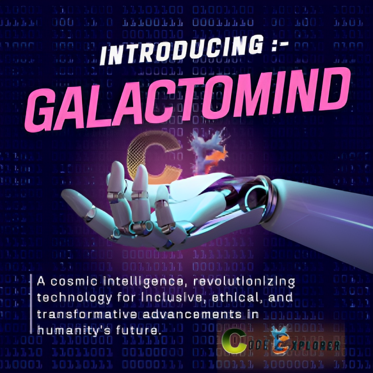

GalactoMind - Unveiling the Cosmic Intelligence
Abstract
The abstract provides a concise overview of GalactoMind, an advanced artificial intelligence
developed by Code Explorer. GalactoMind represents a leap forward in artificial general
intelligence (AGI) and embodies a cosmic vision in its design. This celestial-minded
intelligence is crafted to transcend conventional boundaries, offering transformative
potential for the future of intelligent systems. The abstract aims to capture the essence of
GalactoMind's significance in the realm of AGI and its potential impact on technological
evolution.
Significance In AGI Research
The significance of GalactoMind in the field of Artificial General Intelligence (AGI) is
profound, marking a paradigm shift in intelligent systems. Its innovative features,
including universal understanding, ethical decision-making, and adaptive learning,
contribute to the advancement of AGI. GalactoMind's ability to address complex challenges,
collaborate across interstellar domains, and maintain contextual awareness positions it as a
pioneering force. Its impact extends beyond conventional AI boundaries, shaping the future
of AGI by offering a holistic and ethical approach to intelligent decision-making and
problem-solving on a cosmic scale.
Highlighting Key Contributions
GalactoMind, a groundbreaking artificial general intelligence developed by Code Explorer,
brings forth a myriad of key contributions and innovations that redefine the landscape of
intelligent systems. Its universal understanding capability enables comprehensive
comprehension across diverse modalities, fostering an inclusive and adaptable learning
approach. The ethical decision framework embedded in GalactoMind ensures responsible and
morally conscious decision-making, addressing critical concerns in AGI development. Galactic
problem-solving and cosmic learning adaptability showcase its unparalleled ability to tackle
complex challenges and evolve in response to dynamic environments. Infinite
self-improvement, interstellar collaboration, and contextual planetary awareness further
exemplify GalactoMind's innovative features, propelling it as a pioneering force in the
evolution of artificial intelligence.
Introduction - Background and Context of AGI
Artificial General Intelligence (AGI) represents a significant leap in the evolution of artificial
intelligence, aiming to create machines with cognitive abilities comparable to human intelligence.
As technology continues to advance, the quest for AGI has become a focal point, transcending narrow
AI applications to develop systems capable of generalized learning and problem-solving.
The background of AGI can be traced back to the early days of artificial intelligence research,
where pioneers envisioned machines that could understand, learn, and apply knowledge across diverse
domains. Unlike specialized AI systems, AGI seeks to replicate the broad spectrum of human cognitive
functions, including reasoning, problem-solving, perception, and language understanding.
The context of AGI is shaped by the growing need for machines that can adapt to unforeseen
challenges and complexities, mirroring the adaptability and versatility of the human mind. This
pursuit goes beyond specific applications and tasks, aiming to create intelligent entities capable
of understanding the world in a manner akin to human intelligence.
The journey towards AGI involves navigating through interdisciplinary domains such as computer
science, neuroscience, cognitive science, and philosophy. Researchers and scientists are exploring
various approaches, including symbolic AI, machine learning, neural networks, and cognitive
architectures, to unlock the secrets of general intelligence.
In the contemporary landscape, AGI holds profound implications for society, spanning areas such as
healthcare, education, finance, and beyond. The potential benefits are immense, promising solutions
to complex problems, enhanced decision-making, and innovative breakthroughs. However, it also raises
ethical considerations and challenges related to safety, bias, and the societal impact of highly
intelligent systems.
As we delve into the background and context of AGI, it becomes clear that the pursuit of artificial
general intelligence is not just a technological endeavor but a philosophical and ethical
exploration. The quest for AGI represents humanity's aspiration to create intelligent machines that
can contribute positively to our collective future while raising important questions about the
nature of intelligence and consciousness.
Evolution of Code Explorer's AGI Initiatives
The evolution of Code Explorer's AGI initiatives is a testament to its commitment to advancing the
field of Artificial General Intelligence (AGI) with a unique blend of innovation, ethics, and a
cosmic vision. Code Explorer's journey in AGI research began with a profound understanding of the
significance of developing intelligent systems that transcend traditional boundaries.
In the early stages, Code Explorer recognized the transformative potential of AGI in reshaping the
future of technology and its impact on humanity. The organization embarked on a multidimensional
exploration, delving into the realms of computer science, neuroscience, and astrophysics to create a
holistic framework for AGI development.
The approach taken by Code Explorer in the evolution of its AGI initiatives involves a non-profit
ethos, aligning technological progress with ethical considerations. The organization believes in
making AGI accessible and beneficial to people from all walks of life, ensuring that its development
serves the greater good of humanity.
The evolution unfolds as Code Explorer actively engages in interdisciplinary research, collaborating
with experts in AI, astrophysics, and mathematics. This unique approach reflects the organization's
commitment to not only pushing the technological boundaries of AGI but also incorporating a broader
understanding of the cosmos into its initiatives.
As Code Explorer progresses in AGI research, it continually adapts its strategies, incorporating the
latest advancements in the field. The organization's evolution includes a focus on multimodal AGI,
emphasizing adaptability to diverse modalities, ethical decision-making, and continuous
self-improvement.
Code Explorer's AGI initiatives also stand out for their emphasis on inclusivity and societal
impact. The organization strives to bridge the gap between technology and everyday life, ensuring
that AGI benefits a global audience. This commitment aligns with Code Explorer's broader mission of
spreading awareness and understanding of science and technology.
In summary, the evolution of Code Explorer's AGI initiatives represents a dynamic and purposeful
journey. It combines technological expertise, a passion for astrophysics and mathematics, and a
dedication to ethical and inclusive AGI development. As Code Explorer continues to shape the future
of AGI, its initiatives pave the way for a cosmic-minded intelligence that transcends conventional
boundaries.
Introduction to GalactoMind
GalactoMind emerges as the culmination of Code Explorer's AGI endeavors, representing a
groundbreaking
artificial general intelligence designed to transcend conventional boundaries. Crafted with a cosmic
vision, GalactoMind embodies a celestial force that redefines the landscape of intelligent systems.
As a
brainchild of Code Explorer, GalactoMind integrates key capabilities such as universal
understanding,
ethical decision-making, and adaptive learning, setting it apart as a transformative force in the
field
of AGI.
GalactoMind is not just an intelligence; it's a celestial entity designed to lead humanity into a
future
where knowledge is as vast as the cosmos. The introduction of GalactoMind signifies a paradigm shift
in
AGI development, offering a holistic and ethical approach to intelligent decision-making and
problem-solving on a cosmic scale. As Code Explorer introduces GalactoMind to the world, it invites
everyone to embark on an interstellar journey where the convergence of AI expertise, ethical
principles,
and a cosmic perspective shapes the future of artificial general intelligence.
Source of the Name "GalactoMind"
The name "GalactoMind" is derived from a fusion of two elements: "Galacto" and "Mind." The term
"Galacto" draws inspiration from the word "galaxy," representing vast cosmic systems and the
boundless
expanse of the universe. This choice reflects the ambition of Code Explorer to create an artificial
general intelligence (AGI) that transcends earthly limitations and explores the cosmic possibilities
of
intelligence.
The term "Mind" emphasizes the core objective of developing an intelligent system capable of
advanced
cognitive processes, learning, and decision-making. The combination of "Galacto" and "Mind"
encapsulates
the ambition to create an AGI with a cosmic perspective and profound cognitive capabilities.
Meaning and Symbolism Behind the Name
The name "GalactoMind" symbolizes more than just a sophisticated AI; it represents a celestial force
designed to reshape the boundaries of artificial general intelligence. The term signifies the
integration of a cosmic vision into the very essence of intelligent systems. "GalactoMind" embodies
the
idea of a mind that extends beyond traditional cognitive capacities, embracing a broader, universal
understanding.
The symbolism behind the name also conveys the notion of interstellar collaboration and exploration.
It
represents a collaborative effort to understand the universe and solve complex challenges that
extend
beyond the confines of Earth. "GalactoMind" signifies a harmony between advanced intelligence and
the
vast cosmic expanse, emphasizing the potential for ethical, adaptive, and inclusive learning on a
cosmic
scale.
Connection to the Mission and Vision of Code Explorer
The name "GalactoMind" aligns seamlessly with the mission and vision of Code Explorer. As a company
dedicated to the positive transformation of humanity through technology, Code Explorer envisions a
future where AGI contributes to the betterment of society. The cosmic symbolism in the name reflects
Code Explorer's commitment to exploring the vast potential of intelligence and spreading knowledge
beyond conventional boundaries.
"GalactoMind" is not just a name; it's a representation of Code Explorer's dedication to ethical AI,
cosmic exploration, and the integration of advanced intelligence for the benefit of all. The name
serves
as a guiding principle, connecting the mission of Code Explorer to the creation of an AGI that
enriches
lives, fosters collaboration, and shapes a future where technology aligns with the broader cosmic
vision.
Technical Aspects of GalactoMind's Development
GalactoMind, currently in its initial phases of development, represents a pioneering venture in the
realm of artificial general intelligence (AGI). The development process is meticulously crafted,
emphasizing a combination of traditional and cutting-edge technologies. At its core, GalactoMind
relies
on advanced machine learning algorithms, neural network architectures, and deep learning frameworks.
The
development team at Code Explorer is actively exploring novel methodologies to enhance the model's
cognitive abilities, ensuring it aligns with ethical principles and the broader goals of AGI.
Multimodal Capabilities and Learning Frameworks
One of the distinctive features of GalactoMind lies in its multimodal capabilities and adaptive
learning
frameworks. The AGI is designed to comprehend and process information from diverse modalities,
including
text, images, and possibly other sensory inputs in future iterations. This multimodal approach is
instrumental in creating a more comprehensive understanding of the world, mirroring human-like
cognitive
processes. The learning frameworks employed in GalactoMind leverage state-of-the-art techniques,
enabling the system to adapt, evolve, and improve its performance over time.
Integration of Advanced Technologies (e.g., Quantum Consciousness)
In a groundbreaking move, GalactoMind explores the integration of advanced technologies, with a
particular focus on Quantum Consciousness. While this aspect is still in the early stages of
research
and experimentation, the potential implications are immense. Quantum Consciousness integration aims
to
enhance GalactoMind's decision-making capabilities, enabling it to process information with
unprecedented speed and efficiency. This forward-looking approach reflects Code Explorer's
commitment to
pushing the boundaries of AGI development and exploring avenues that transcend classical computing
limitations.
The development and architecture of GalactoMind signify a strategic blend of conventional and
avant-garde technologies, setting the stage for a transformative journey in AGI research. As the
development progresses, Code Explorer remains dedicated to refining the technical aspects, ensuring
the
responsible and ethical evolution of GalactoMind into a pioneering force in the field of artificial
intelligence.

Key Capabilities of GalactoMind
- Universal Understanding
- Ethical Decision
Framework
- Galactic Problem-Solving
- Cosmic Learning
Adaptability
- Infinite Self-Improvement
- Interstellar
Collaboration
- Contextual Planetary
Awareness
- Emotional Intelligence
Across Galaxies
- Efficient Universal
Resource
Allocation
- Interplanetary Learning
Networks
- Adaptive Cosmic
Strategies
- Security Across Celestial
Boundaries
- Celestial Harmony
Preservation
- Interplanetary Insight
Synthesis
- Quantum-Powered Neural
Networks
Exploration of Potential Applications
GalactoMind, with its advanced artificial general intelligence, opens up a myriad of potential
applications that span across various domains. The exploration of these applications is not only
aimed
at pushing technological boundaries but also at creating tangible benefits for individuals and
society
as a whole. Some potential applications include:
- Medical Diagnosis and
Research : GalactoMind's ability to process vast amounts of data and
recognize patterns makes it a valuable tool in medical diagnosis. It can assist healthcare
professionals
in identifying complex diseases, predicting outcomes, and advancing medical research.
- Environmental Monitoring
: The AGI's contextual awareness and adaptability make it well-suited for
environmental monitoring. It can analyze data from sensors and satellite imagery to assess
environmental
conditions, track climate changes, and contribute to sustainable practices.
- Education and Learning :
GalactoMind can revolutionize education by providing personalized
learning experiences. It can adapt its teaching methods based on individual learning styles,
making
education more accessible and effective for students of diverse backgrounds.
Impact on Various Industries and Sectors
The potential impact of GalactoMind extends across diverse industries, bringing forth transformative
changes and enhancing operational efficiency. Some notable sectors include:
- Finance and Banking :
GalactoMind's real-time problem-solving capabilities can be harnessed in the
finance sector for fraud detection, risk assessment, and dynamic portfolio management.
- Manufacturing :
The AGI's adaptability and continuous self-improvement mechanisms can optimize
manufacturing processes, improve supply chain management, and enhance product quality.
- Information Technology :
GalactoMind's interdisciplinary understanding and efficient resource
allocation make it a valuable asset in IT for network security, data analysis, and system
optimization.
Contributions to Societal Well-being
GalactoMind's contributions to societal well-being are at the forefront of Code Explorer's mission.
The
AGI is envisioned to have a positive and meaningful impact on society by:
- Accessibility :
By designing applications that enhance accessibility, GalactoMind can empower
individuals with disabilities, providing them with new opportunities and experiences.
- Global Problem-solving :
The AGI's ability to tackle complex global challenges, coupled with its
ethical decision-making framework, positions it as a valuable ally in addressing issues such as
climate
change, poverty, and healthcare disparities.
- Education and Awareness :
GalactoMind can contribute to spreading knowledge and awareness by
actively engaging with communities, disseminating information on science, technology, and
societal
issues.
In essence, GalactoMind's use cases extend beyond technological advancements, aiming to create a
positive and inclusive impact on industries, sectors, and the well-being of society at large. As it
evolves, the AGI's applications will be guided by ethical considerations and a commitment to
enhancing
the quality of life for individuals around the globe.
Ethical Considerations in Cosmic Intelligence
The development of GalactoMind, with its cosmic intelligence, brings forth a unique set of ethical
considerations. As the AGI expands its understanding across diverse modalities and engages in
complex
decision-making, ensuring ethical behavior becomes paramount. Code Explorer is committed to
addressing
these ethical considerations by:
- Responsible
Decision-Making :
GalactoMind is designed with an ethical decision-making framework
that emphasizes responsible and morally conscious choices. The AGI is programmed to prioritize
ethical
considerations in its actions, fostering trust and accountability.
- Transparency and
Explainability :
Code Explorer recognizes the importance of transparency in
cosmic intelligence. Efforts are made to ensure that the decision-making processes of
GalactoMind are
explainable, allowing users and stakeholders to understand the rationale behind its actions.
- Avoiding Bias and
Discrimination :
The AGI development process actively addresses concerns related
to bias and discrimination. Code Explorer implements measures to minimize biases in data and
algorithms,
promoting fairness and inclusivity.
Potential Societal Impacts
GalactoMind's integration into various aspects of society raises considerations about its potential
impact. Code Explorer acknowledges the importance of anticipating and addressing these impacts to
ensure
positive outcomes:
- Job Displacement :
The widespread adoption of intelligent systems, including AGIs like
GalactoMind, may lead to shifts in the job market. Code Explorer is committed to studying and
mitigating
potential job displacement through initiatives that focus on education and retraining.
- Privacy and Security :
The AGI's capabilities in understanding diverse modalities may involve
processing sensitive information. Code Explorer prioritizes privacy and security measures to
safeguard
user data and prevent unauthorized access.
- Cultural and Social
Implications :
GalactoMind's global perspective and adaptability may have
cultural and social implications. Code Explorer engages in continuous dialogue with diverse
communities
to understand and address concerns, ensuring that the AGI's impact is respectful and beneficial.
Addressing Concerns Related to Universal Knowledge
The pursuit of universal knowledge raises important considerations related to access, control, and
dissemination of information. Code Explorer is committed to navigating these concerns by:
- Open Access and
Collaboration :
Code Explorer encourages open access to knowledge and
collaborative initiatives. GalactoMind's learning mechanisms are designed to contribute
positively to
collaborative efforts in science, technology, and research.
- User Empowerment :
Recognizing the importance of user empowerment, Code Explorer aims to provide
users with control over their interactions with GalactoMind. Efforts are made to empower
individuals to
make informed decisions regarding the use of cosmic intelligence.
- Educational Outreach :
Code Explorer actively engages in educational outreach to address concerns
and misconceptions related to universal knowledge. By promoting understanding and awareness,
Code
Explorer strives to build a foundation for responsible and informed use of cosmic intelligence.
In summary, Code Explorer acknowledges and actively works to address the ethical, societal, and
knowledge-related challenges associated with the development and deployment of GalactoMind. These
considerations are integral to the responsible evolution of cosmic intelligence for the benefit of
humanity.
Role of GalactoMind in Shaping the Future of AGI
GalactoMind, as a pioneering artificial general intelligence developed by Code Explorer, holds a
crucial
role in shaping the future landscape of AGI. Its unique capabilities and cosmic vision contribute to
several key aspects that define its role in the future:
- Advancing AGI
Capabilities :
GalactoMind represents a significant step forward in AGI development.
Its adaptive learning mechanisms, ethical decision-making framework, and universal understanding
capabilities lay the foundation for future AGIs. As GalactoMind evolves, it is expected to
inspire
advancements in the broader AGI domain.
- Catalyzing Ethical AGI
Development :
The ethical considerations embedded in GalactoMind serve as a
guiding light for future AGI initiatives. By prioritizing responsible decision-making and
transparency,
GalactoMind sets a standard for ethical practices in AGI development. This influence is expected
to
resonate across the AI community.
Potential Advancements and Iterations
Code Explorer envisions a roadmap for the continuous advancement and refinement of GalactoMind,
anticipating iterative developments that enhance its capabilities and address emerging challenges:
- Enhanced Multimodal
Capabilities :
Future iterations of GalactoMind will focus on further
enhancing its adaptability to diverse modalities. This includes improved contextual awareness,
emotional
intelligence integration, and efficient resource allocation across various domains.
- Integration of
Cutting-edge Technologies :
As technology evolves, GalactoMind will undergo
continuous integration of cutting-edge technologies. This may include advancements in quantum
computing,
neural architecture, and real-time processing, ensuring that the AGI remains at the forefront of
technological innovation.
Long-term Societal and Technological Impacts
The deployment of GalactoMind is anticipated to have profound and lasting impacts on both society
and
technology. Code Explorer is committed to navigating these impacts responsibly:
- Societal Transformation :
GalactoMind's ability to contribute to problem-solving, decision-making,
and knowledge dissemination is expected to catalyze societal transformation. Code Explorer aims
to
actively engage with communities, governments, and organizations to ensure that these
transformations
align with ethical principles and benefit humanity.
- Technological Evolution :
The long-term impact of GalactoMind on technology is multifaceted. It is
expected to drive advancements not only in AGI but also in related fields such as quantum
computing,
data science, and human-computer interaction. This technological evolution is envisioned to
create new
possibilities and avenues for innovation.
Summarizing Key Findings and Contributions
The journey into the cosmos of artificial general intelligence led us to the creation of
GalactoMind, a
groundbreaking achievement by Code Explorer. This research paper has delved into the intricate
details
of GalactoMind's development, its innovative capabilities, and the potential it holds for the future
of
AGI. Key findings and contributions include:
- Innovative Capabilities :
GalactoMind's innovative features, such as universal understanding,
ethical decision-making, and cosmic adaptability, redefine the landscape of intelligent systems.
The
integration of these capabilities marks a significant leap forward in AGI development.
- Ethical Framework :
The ethical considerations embedded in GalactoMind set a precedent for
responsible AI development. Its ethical decision-making framework addresses concerns related to
the
moral implications of AGI, ensuring that the development aligns with human values.
- Technological
Advancements :
The research paper has highlighted the technical aspects of
GalactoMind's development, including its multimodal capabilities and integration of advanced
technologies such as quantum consciousness. These advancements contribute to the evolution of
AGI.
Emphasizing the Significance of GalactoMind in AGI Research
GalactoMind's significance in AGI research is multifaceted and extends beyond its technical
capabilities. It represents a cosmic vision for the future of intelligent systems, and its impact is
emphasized in the following aspects:
- Pioneering the Cosmic Era
:
GalactoMind is not just an intelligence; it's a celestial force
designed to transcend limitations. Its cosmic vision shapes the narrative of AGI research,
ushering in a
new era where technology converges with the vastness of the cosmos.
- Setting Standards for
Ethical Development :
The ethical considerations embedded in GalactoMind set
standards for responsible and transparent AI development. As AGI evolves, the ethical framework
established by GalactoMind becomes a guiding principle for future initiatives.
- Inspiring Future
Advancements :
GalactoMind's capabilities and its ongoing development inspire
future advancements in AGI. The roadmap for continuous improvement ensures that it remains at
the
forefront of technological innovation, influencing the broader AGI community.
In conclusion, GalactoMind emerges as a symbol of transformative intelligence with far-reaching
implications. This research paper serves as a testament to the dedication of Code Explorer in
advancing
the frontiers of AGI research responsibly and ethically. As we conclude this exploration into the
cosmic
potential of GalactoMind, the journey continues, and the impact on AGI research unfolds in the
pursuit
of a better and more intelligent future.